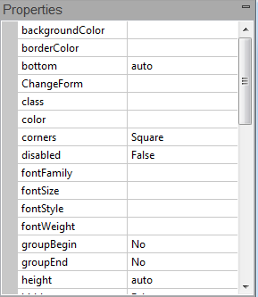

Properties Window
Jump to navigation
Jump to search

The project, its forms and the controls on those forms have information about them that can be edited in the Properties Window.
{kind=link}
- If a change would affect the appearance of a form or control, the Design Screen will be updated.
- A short description of the property appears in the Help window below the Properties Window.
Project Properties
| backgroundColor | Sets the default background color for all forms. Can be a color name, #RRGGBB, rgb(R,G,B), or transparent. To enable Dark Mode, set to 'inherit'. |
| backgroundImage | Sets the default background pattern or image for all forms. Overrides the backgroundColor property. Works best if image is in the project folder. Do not use absolute paths. To stop image from repeating to fill the screen, put background-repeat:no-repeat; into the style property of Project Properties. Gradients like linear-gradient(#55aaee,#003366) can be set at design time or runtime. URLs like url(https://www.nsbasic.com/images/eiffel.gif) can be set at runtime only.
|
| browserwarnmsg | Message which appears is app is run on an unsupported browser. If blank, the warning does not appear. See also browserWarningMessageAfterScript. |
| contentSecurityPolicy | The Content Security Policy defines the security rules that the browser should enforce. The default is to allow everything, which is not sufficient for secure apps. Required by VoltBuilder apps. This can be multiline for complex policies. The Content Security Policy is not used if you are running on the desktop. |
| copyright | The copyright message. This will be placed in the generated code. |
| defaultformsize | The default size used for new forms. If you want a size not on the list, set the height and width for each form in Form Properties. |
| description | Description of the project. Used in config.xml. |
| enableAppScroll | Allow app to scroll? Use for forms longer than the screen. See Making Apps which Scroll. Needs to be set to true for jQuery Mobile swipeleft and swiperight. |
| enableBrowserArrows | After ChangeForm, enable the back and forward arrows of the browser to move between forms. Defaults to false. |
| enableNiceLinks | Don't use hash (#) in URL? Also needs to be set in Dashboard. |
| eslintRules | For syntax checking. A JSON configuration object that modifies the default style guide. See the Eslint Rules Reference for all the rules. Sample value: {
"quotes": ["error", "single"]
}
|
| enableNiceLinks | On servers where this is enabled, do not show '#' character in URL. If you are deploying to VoltServer, go into the Dashboard for your app and set Nice Links to true as well. Defaults to false. |
| EULA | The text of the End User License Agreement that the user has to agree to before the app will run. |
| events | Project wide events which are responded to. |
| extrafiles | Files to include with your project. These files should be in your project's folder. If you include the name of a folder, the folder and all of its files will be included. |
| extraheaders | Additional lines to the header. This is a good place to include extra JavaScript libraries. |
| firstform | The name of the initial form to display. If left blank, the first form is used. If the form specified no longer exists, it will be changed to the first form on the next deploy. |
| fontfamily | The default font for all controls. Default value is system, which uses the default font for each device. Android and iOS each have custom fonts: Roboto and San Francisco. To use a single font for all platforms, use something like Helvetica. |
| icon | Should be 512x512 in png format. If you are not building for Electron, 192x192 is OK. Works best if the image is in the project folder. If you do not specify an icon, the AppStudio icon will be used. Do not use absolute paths. Unix file names must be used: you cannot include spaces or invalid characters such as colon (":") or parentheses ("()"). |
| lang | Defines the language of the HTML page. See the docs for more info. |
| language - scripting | BASIC or JavaScript. If BASIC, code is converted to JavaScript before running. |
| obfuscation | Name of the external routine to obfuscate the runtime code. |
| obfuscatorSettings | If obfuscation is set to js-obfuscator-custom, these settings are used. |
| projectCSS | Opens an editor window with CSS rules for the project. |
| rtl | Use right to left language on controls? |
| script | Opens a Code Window with the Global Code for the project. |
| statusbar | The appearance of the iOS status bar at the very top of the screen. If content is set to default, the status bar appears normal. If set to black, the status bar has a black background. If set to black-translucent, the status bar is black and translucent. If set to default or black, the web content is displayed below the status bar. If set to black-translucent, the web content is displayed on the entire screen, partially obscured by the status bar. |
| stopOnError | Show a MsgBox if error at runtime? |
| style | The style used by the body of the app. See the Style page for more info. Must be on a single line. |
| title | The public title of the program. Special characters like "&" are not allowed if compiling with VoltBuilder. |
| useStrict | Do additional syntax checking at runtime, such as undeclared variables. |
| version | Version number of app. User specified. |
| viewportFit | iOS: How should the app cover the screen? auto currently same as contain. cover fills the entire screen. contain sticks within the safe area. |
| Electron | |
|---|---|
| Chrome Dev Tools? | Open Chrome Dev Tools automatically at run time? |
| electronMain.js | Startup module for app. More info. |
| icon (512) | Icon template. Must be 512x512 png, jpg or jpeg. If not supplied, AppStudio icon will be used. |
| package.json | Parameters for app. Node modules, etc. More Info. |
| Frameworks | |
| BootstrapPath | The path to the Bootstrap.Leave blank for the default, but if you have a custom build of Bootstrap, put the path here. If to a local folder, should end in /. Must be single line. |
| BootstrapTheme | The theme used by Bootstrap. Affects the appearance of all Bootstrap controls. |
| jQueryMobileTheme | If jQuery Mobile is used, the default theme. |
| jqWidgetsLicence | When you pay for a jqWidgets license, you'll get a serial number. Enter it here. |
| pathTo_jqWidgets | The path to the jqWidgets files. Should end in "/" if local path. See this blog post for changing the path to a local folder. |
| Progressive Web App | |
| homescreenTitle | App title when saved to Home Screen. |
| Make PWA? | Make a PWA? Defaults to true. |
| manifest | Manifest for PWA. See Progressive Web Apps. |
| VoltServer | |
| AppID | ID of the app in VoltServer. Assigned automatically when deployed to VoltServer. |
| Dashboard Access | Allow the app access to user data on VoltServer, much like the Dashboard has. |
| Domain | The location of the app on VoltServer. For example, signon-controls-sharply.volt.live. |
| VoltBuilder | |
| See VoltBuilder docs |
{kind=link}
Code Module Properties
| id | The name of the Code Module. |
| Language | The programming language used in the Code Module. Can be JavaScript, BASIC or PHP. |
| loadType | How will this JavaScript module be loaded?
|
| script | Opens a Code Window to edit the script. |
| src | Location of the external file this Code Module refers to. |
Form Properties
See the Form page.
Control Properties
See the Properties and Methods page.
Next: Status Bar